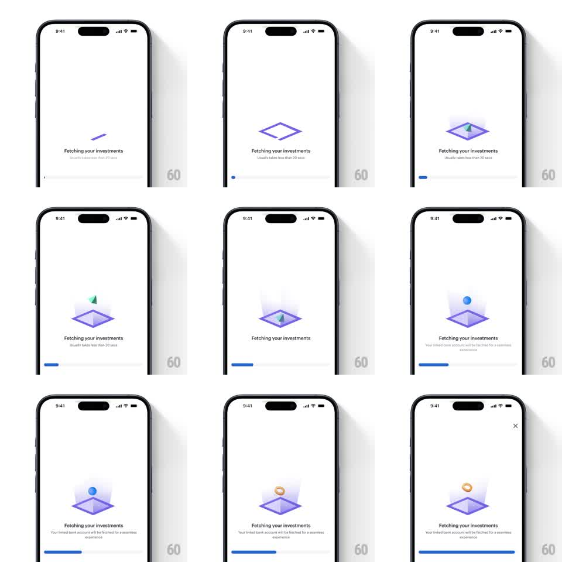

Media
Frame-by-frame

Rebuild this animation 1:1: Smallcase's "Fetching your investments" loader - geometric shapes (pyramid, sphere, torus) rise from an isometric purple platform one after another while a progress bar fills beneath the copy.

Rebuild this animation 1:1: Smallcase's "Fetching your investments" loader - geometric shapes (pyramid, sphere, torus) rise from an isometric purple platform one after another while a progress bar fills beneath the copy. ## Integration Integration: stack-agnostic spec - springs given as stiffness/damping, timed motions as duration + curve; map every value to your framework and animation library of choice. ## Scene Smallcase loading screen, white: a purple-outlined isometric diamond platform center; "Fetching your investments" with "Usually takes less than 20 secs" beneath; a thin blue progress bar at the bottom; an X close appears top-right after a few seconds. Shapes cycle: a green pyramid, a blue sphere, an orange torus. ## Motion spec Pattern: cycling 3D shapes emerging from an isometric platform with a filling progress bar. - The platform draws in first: its outline strokes draw on (300ms), then its translucent faces fade in (200ms). - Each shape's cycle (~1.6s): it rises from the platform's center (translateY -40 -> 0 relative, spring ~260/16) scaling 0.5 -> 1, rotates slowly while aloft (rotateY 180 degrees over its stay), then sinks back (scale -> 0.5, fade, 300ms) as the next shape begins. - Consecutive shapes overlap slightly - the next starts rising as the current sinks (150ms overlap). - The platform's glow pulses gently under each shape (opacity 0.3 -> 0.55, matching the rise). - The progress bar fills linearly over the expected duration (~20s), indeterminate-shimmering if the fetch runs long; a close X fades in top-right after 4s. ## Calibration - Isometric discipline: every shape enters along the platform's vertical axis - no diagonal drifts. - One shape aloft at a time; the platform is a stage, not a toybox. ## Reduced motion Shapes crossfade above the platform (300ms each); progress bar fills without shimmer. ## Don't miss - Each shape casts a soft contact shadow on the platform that scales with its height. - The platform never moves - all motion belongs to the shapes.